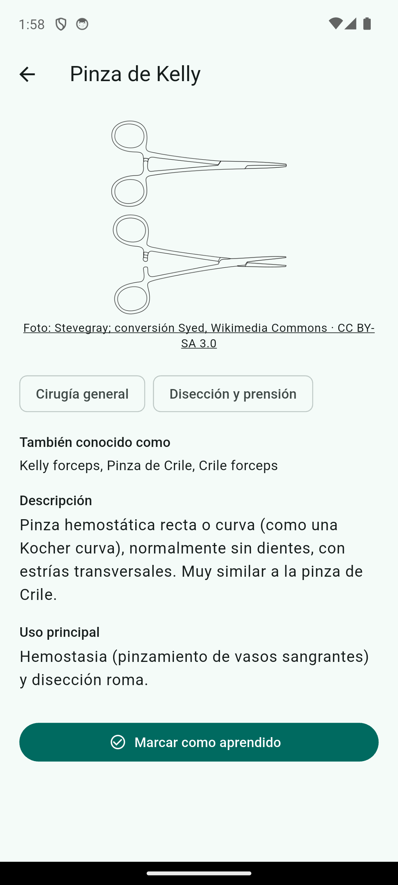

Open source · Bloc quirúrgic
Open source · Bloc quirúrgic
Instriq reuneix instrumental, protocols i l'experiència real del bloc quirúrgic en un sol lloc, accessible des de qualsevol tauleta o mòbil — perquè aprendre a moure's al quiròfan no depengui d'una carpeta de paper desactualitzada.
Incorporar-se a un bloc quirúrgic exigeix adquirir molt coneixement pràctic en poc temps. Instriq existeix perquè qualsevol instrumentista, infermera, auxiliar o membre de l'equip quirúrgic trobi informació fiable, actualitzada i basada en l'experiència real d'altres professionals — no en un manual genèric.
VisióA llarg termini, que Instriq sigui el lloc on el coneixement compartit, la col·laboració entre professionals i la tecnologia oberta ajudin a millorar la formació, la seguretat del pacient, la pràctica clínica i la investigació mèdica en hospitals de tot el món.
Cada aportació construeix una base de coneixement més completa i revisada per a tota la comunitat. Com més persones comparteixin la seva experiència, millor la informació disponible per a totes.
El catàleg i l'aprenentatge bàsic no requereixen compte ni pagament. Ningú es queda fora per no tenir pressupost.
Codi obert, decisions públiques i, en el futur, comptes clars de com s'utilitza cada donació.
Construït amb professionals sanitaris i desenvolupadors voluntaris, no per una empresa tancada.
Busquem alinear-nos amb estàndards reconeguts del sector (HL7, FHIR, DICOM) segons ho necessiti el projecte.
L'aprenentatge bàsic funciona com a convidat. Només cal compte si el teu grup vol compartir el seu propi coneixement.


+70 instruments organitzats per 9 especialitats i per categoria funcional, amb noms comercials i fabricant.
Flashcards i qüestionaris de repàs, amb progrés guardat al teu propi dispositiu.
Instrumental específic per cirurgià i procediment, compartit i validat dins del teu grup.
Auditoria completa de cada acció; una xarxa de coneixement que connecta instrumental, tècniques i protocols entre si; i analítica de comunitat agregada i anònima.
Comparteix l'instrumental i les tècniques del teu equip dins del teu grup, ajuda'ns a revisar contingut del catàleg, o digues quin protocol o guia et falta.
El codi és públic. Flutter (Android/iOS/Web) + Supabase. Comença pel README del repositori.
Instriq l'impulsa un petit equip inicial, però el seu creixement depèn d'una xarxa de professionals sanitaris, docents, investigadors i desenvolupadors que col·laboren de manera voluntària i sense ànim de lucre. Si vols formar-ne part, escriu-nos.
Quan hi hagi prou activitat, publicarem aquí de forma agregada i anònima: l'instrumental més consultat, les especialitats amb més activitat, els protocols més llegits, i les guies que la comunitat més demana.
Instriq acaba de començar — encara no hi ha dades d'ús a mostrar. Sigues de les primeres persones a construir aquesta comunitat. Quan existeixi aquest apartat, serà agregat i respectuós amb la privacitat: mai dades individuals d'una persona o un grup concrets.
El nom i la marca "Instriq" queden reservats per protegir la identitat del projecte i evitar usos que confonguin la comunitat — el codi en si és lliure sota AGPL-3.0.
A llarg termini habilitarem donacions completament transparents, amb la destinació de cada aportació publicada: mantenir la infraestructura i els dominis, cobrir servidors, desenvolupar noves funcionalitats, integrar estàndards i intel·ligència artificial, i donar suport a projectes d'investigació mèdica i biomèdica que repercuteixin en una millor atenció als pacients.
Encara no hi ha un sistema de donacions actiu. Quan n'hi hagi, la distribució de fons serà pública, indicant la destinació de cada aportació i les investigacions recolzades.